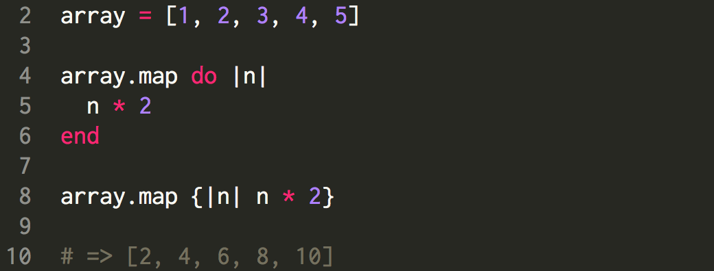
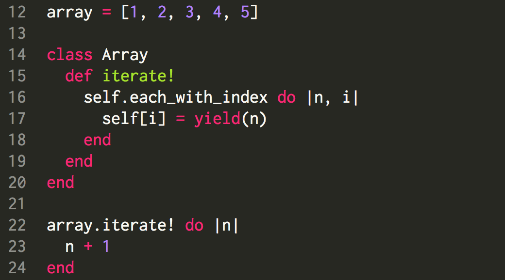
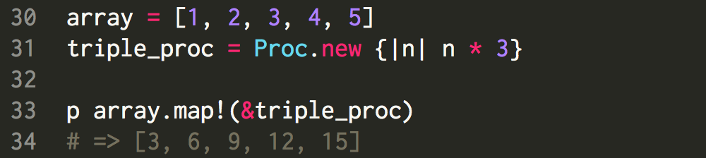
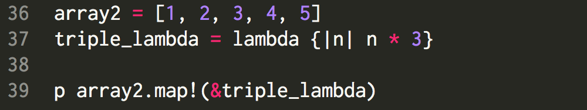
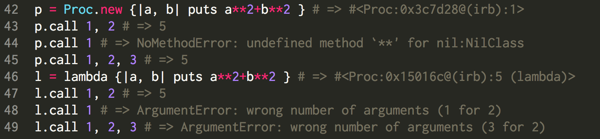

Today I want to talk about blocks, Procs, and lambdas. If you have never seen them before, you're in the right place. Hopefully by the end of this reading, you'll have a much better understanding of the three terms and when to use them appropriately. Let us start with a block.
So... what is a block?! Well, I don't mean to shock you or anything, but you've been using blocks ever since... God knows how long. Whenever we iterated through an array/hash or used #map! or #collect! to change their elements, we used blocks. A block is a code that goes in between 'do' and 'end' -- or {}. Here's are two equivalent, yet syntactically different, examples of a block:

Blocks are incredibly useful in accessing individual elements within a collective objects like arrays and hashes, and they do this by setting variables within the pipelines. To show you what is responsible for the convenient way the blocks function, I present to you... yield.

Thanks to #yield, I can now create my own method (#iterate!) that works exactly the same as #map! or #collect!. It's always good to know how and why something works, instead of just blindedly enjoy its convenience.
One thing I should have mentioned is the fact that the blocks are not objects. They are just 'blocks' of code that implement the user-given information to perform a certain task. But what if you want to repeatedly use the same block? We sure don't want to write it over and over since that wouldn't be such a D.R.Y. way of coding, now is it? Here is when Procs -- short for Procedures -- come into play. Procs are in fact objects that can be stored as variables. To make it even easier for you to understand: Procs are basically your code blocks being 'stored' in a variable for repeated use! How nice of ruby. Here's an example of how to use Procs.

Neat, right? You can even look at it as a 'copy' and 'paste' type of deal. It literally copies the block you give to Proc.new and pastes it to the #map! method. One thing to notice is the use of an ampersand (&): it converts the Proc into a block so the block described in the Proc object can be implemented.
Lastly, I will tell you about lambdas. It works almost the same way as the Proc object. Let's take a look.

This seems awfully similar to Procs, no? Well, as a matter of fact, a lambda is essentially a Proc object.At this point you're probably asking yourself, "Then what's the difference between a Proc and lambda?" As I mentioned before, Procs act as a 'cut and paste' tool. Moreover, it does not look for any argument parameters. Lambdas, on the other hand, are Proc objects that search for the argument parameters.

Another difference is in their way of interpreting #return. Lambdas return the value of themselves, whereas Procs return out of the block.